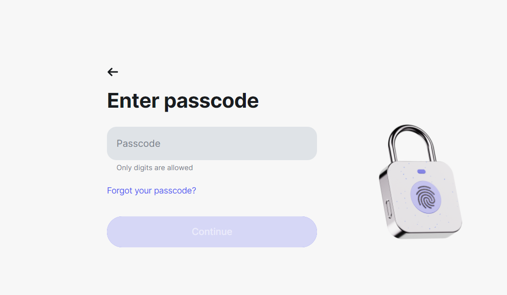
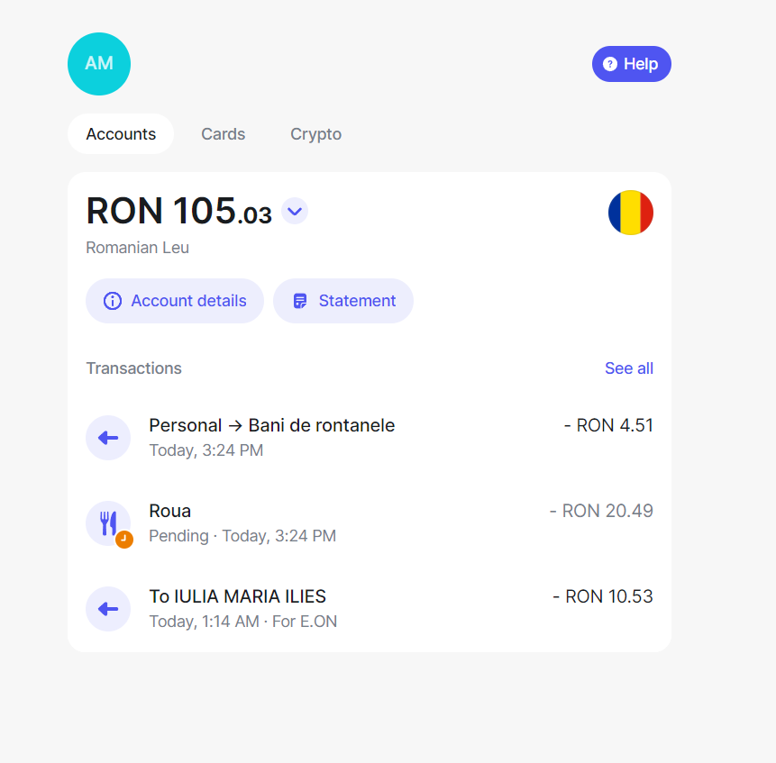
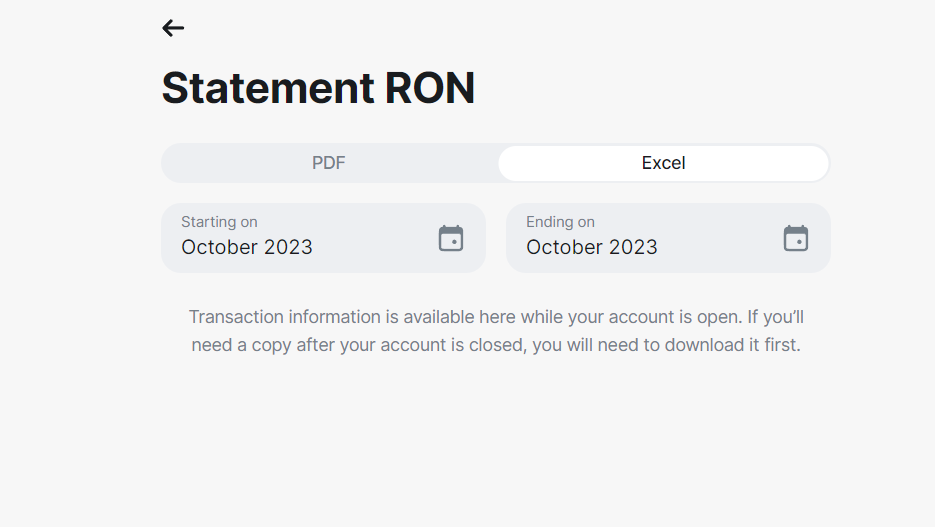
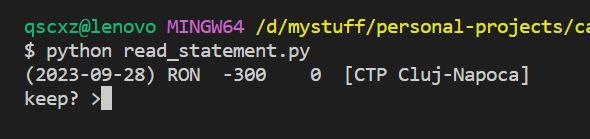
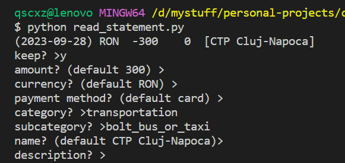
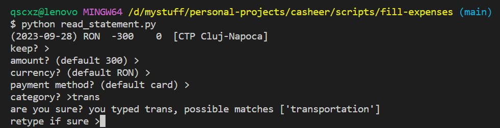

How expenses are currenlty filled
I want to prefix this by mentioning that if you're not familiar with the abstractions from by application, some parts of this article will not really make sense. I'm going to make a post soon that explains in detail the design behind it, but if you hear the word "entry" and it confuses you, or see weird numbers for values, keep that in mind.
It's been already 7 days since October has finished and I slacked off doing my expenses. Probably because the app is still in development at the moment and it's not particularly user friendly, but this is part of building it and I want to be able to read this article in the future and realise the progress I was able to make. I'll walk through all the steps that I have to do at the moment in order to fill the sheet for October, using everything I have from Revolut.
First, I'll log into Revolut in the browser. This is how it looks like:
Next you have to fill in your password:
which takes you to the main Revolut page, with your recent expenses. It looks something like this:
Note: Revolut web is shit and if you're inactive for 5 minutes it logs you off and you have to do the entire process again. (I know it's an essential security feature but isn't it easier to rant?)
I need a list with all the expenses from October, in order to parse them all, filter the unnecessary ones and parse the relevant. For this, I will want to generate what Revolut calls a statement using the button below the active balance. Clicking that button leads you to the following page:
I will be downloading the Excel format, which is essentially a .csv file, thus can be parsed easily programatically. There is a button below (not visible in the screenshot) for generating the statement, after which you have to wait for about 1 minute for it to be completed. Once downloaded, the interaction with Revolut ends and you should probably log off, for security reasons (although Revolut does a pretty good job at that already).
Now that I have the expenses file, I can use the code I've written to insert them into casheer. At the time I wrote those scripts, the app was still early in development and I was mainly just trying to get an idea of how these will look in a CLI environment. They are obviously far from the finished application which I'm expecting to release soon. But I wanted to get the database into production, and I quickly wrote those just to have something easier to work with than raw queries and do some manual testing for the API and Go client. I'm still using them now since it wasn't worth implementing anything other than minor tweaks as a temporary replacement for the real UI and CLI, and reading this article some time after all the work is finished is gonna bring some nostalgia.
If you want to learn more about the parsing functionality, nothing speaks the truth better than the code which does it. You can take a look at the scripts here, and here which will also give the idea on the format of the expenses file and the data that is redundant.
Note that being still in the testing phase, I'm actively comparing the input that I'm getting from the script to my Revolut expenses, on my phone. This does take a lot of additional time unfortunately, but it has to be done to ensure data integrity. In fact, I discovered that the Revolut statement missed 2 or 3 transactions.
So let me share with you how it works. First, I run a Python script that takes the Revolut expenses, which produces an output to a file that is understood by the second Go script. The second one uses the Go HTTP Casheer client to read the formatted expenses and insert them to the database. The reason why I have two scripts is because I wrote the Python one a very long time ago while I was still experimenting with the idea of creating my own expense manager, and nonetheless it helps me identify mistakes I made while running the script (which I make), potentially missing data and also helps testing the Go client.
The Go script also takes care of the missing entries, if they are not present in the database. If an expense without an entry is found, it automatically creates it. I don't remember what it will use to fill in the amount for that entry, but if you reached this point it doesn't matter anyway, cause you probably didn't make a prediction for the set of expenses that will belong to the entry.
The python script opens an interactive terminal and goes through each expense. If the current expense is not relevant for whatever reason (e.g. it was mistakenly inserted by Revolut), you can also skip it.
You can then set the expense data interactively. Here's how the full data looks like:
Based on what was received from Revolut, everything will have a default value except the category and subcategory. Most of the time I leave the defaults, but with the current implementation I had to fill in the category and subcategory by hand, since it was impossible to know it. For that reason, I wrote a mechanism where if the word doesn't match, it will ask me again for input and display me the category or subcategory that starts with what I wrote. And if it's really a new category, it will memorise it. In that way if I don't know what I want to write, I can at least use the first few letters to find out. I originally wanted to do an autocomplete feature for this, but doing so in Windows is fucking hard and I lost my patience for just this script.
Being able to edit all the fields could be useful, but a nice thing about my application is that by design, you should be able to not care about transactions that are split over multiple batches. For example, if a friend lended you 50$ and you sent him back 50$, both will appear in Revolut, and if you defined your entries correctly, they should add up together. This is also the case for example for Revolut transactions, where you split the bill, since receiving money from other participants in a split bill are separate Revolut transactions. This is intended by design. I know it may sound confusing if you're not familiar with casheer, and you may wonder why you'd track both to begin with. As I said, I'm going to soon release an article where I explain why I designed the abstractions this way.
Once processing the entire statement is finished, I'm left with the correct expenses in a format that's understood by the Go script. The next step is to run the casheer server, first with a test database, just to be on the safe side. I'm modifying data in production after all! Once the server is running, the Go script will use the Go client to insert everything in the database, and create the corresponding entries (based on category and subcategory) if they don't exist already.
And that is pretty much it. Even if at some point I was moving quickly cause I was getting used to it, the whole shenanigan took over two hours to insert around 410 expenses. And even like that I made a few mistakes I had to correct manually. So it's definitely not the nicest process at the moment, but I'm enjoying it. It's something I built, and it feels nice to see your app evolve from just a thought to a "beta" stage, where it actually stores your "production" data. The API is almost done and my girlfriend did significant frontend progress, so I'm almost there. This has been a nice run, but I'm honestly quite sick of this motherfucker already and I want to see it completed. It's been taken much longer than expected, and I learned the hard way what it means to focus on making the "perfect" application instead of delivering a usable product.
Take care and don't repeat my mistake.
By the way how the fuck did I manage to spend so much money last month???